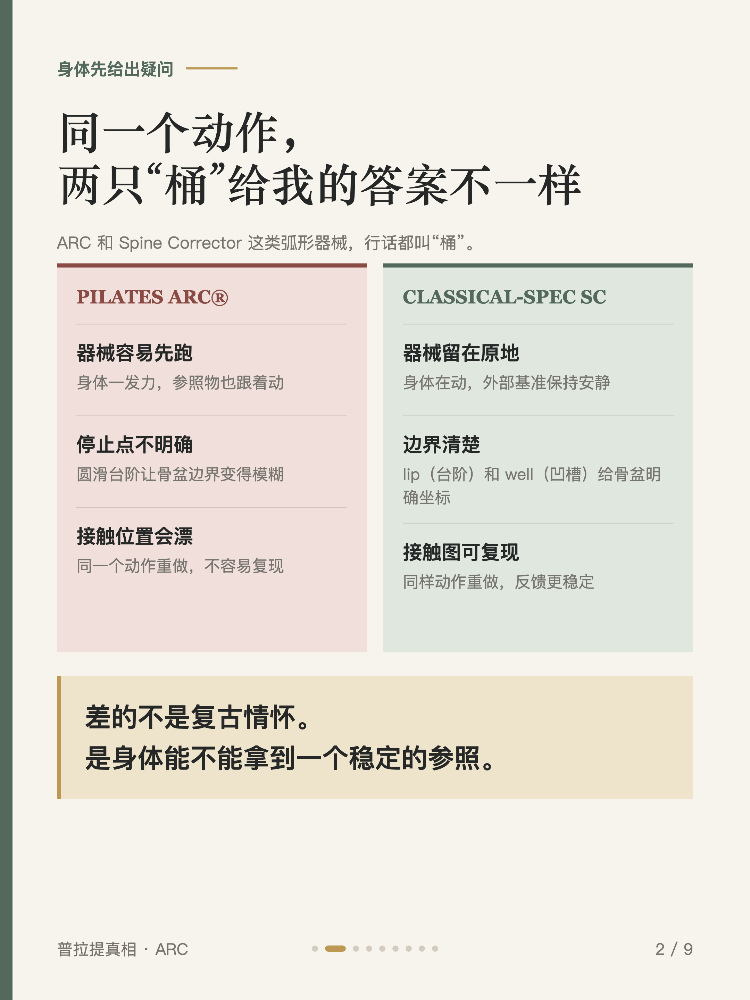
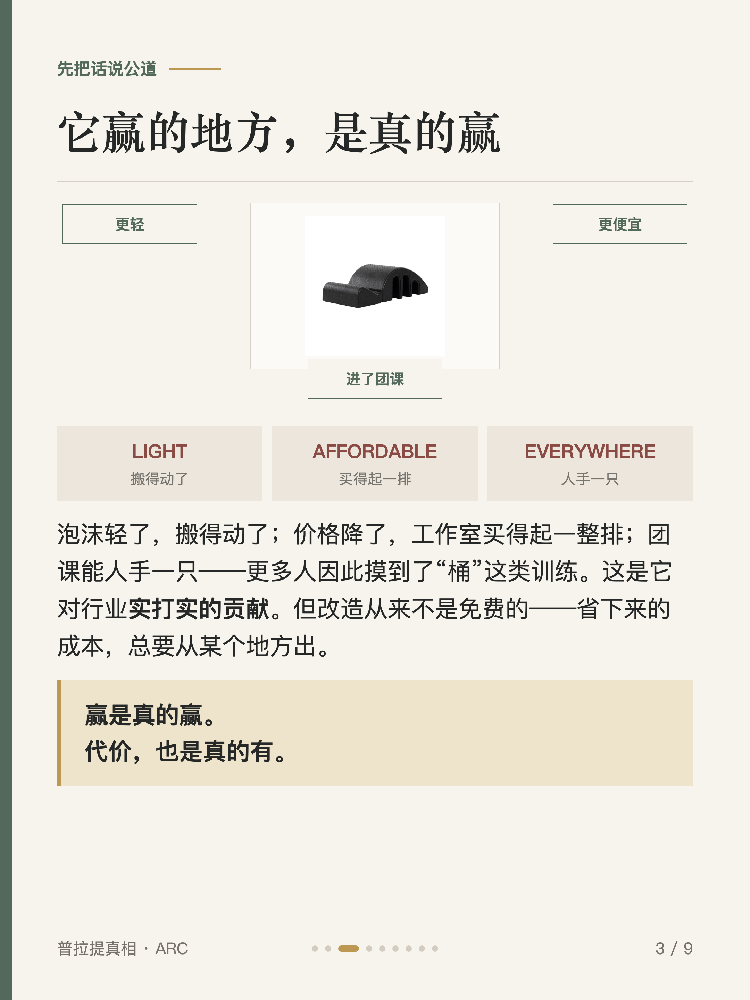
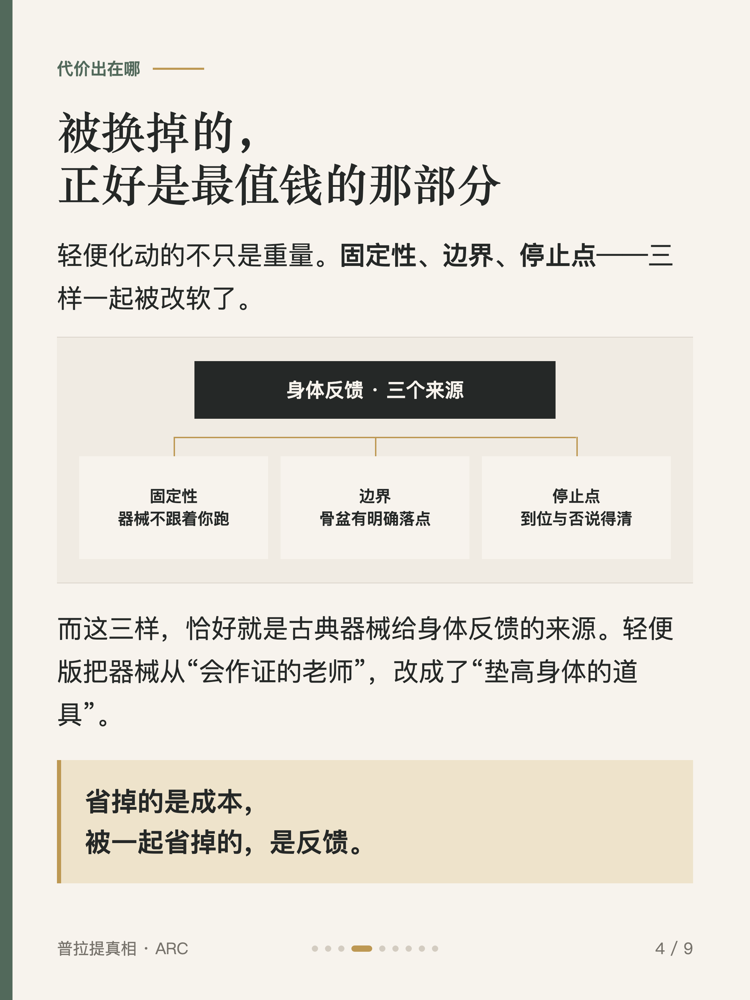
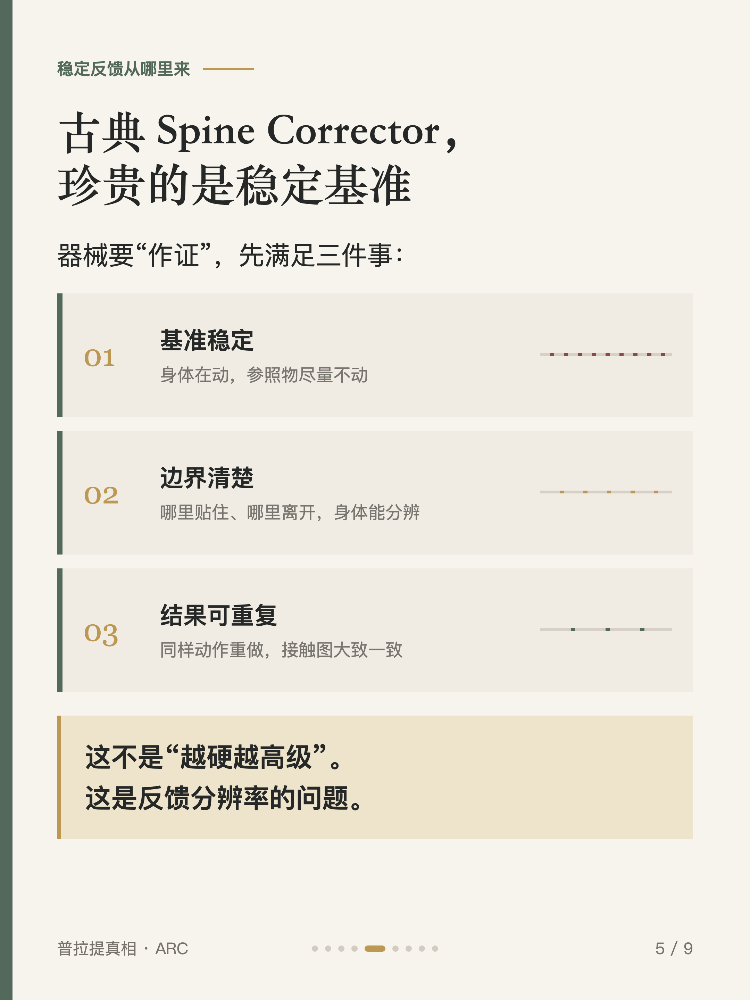
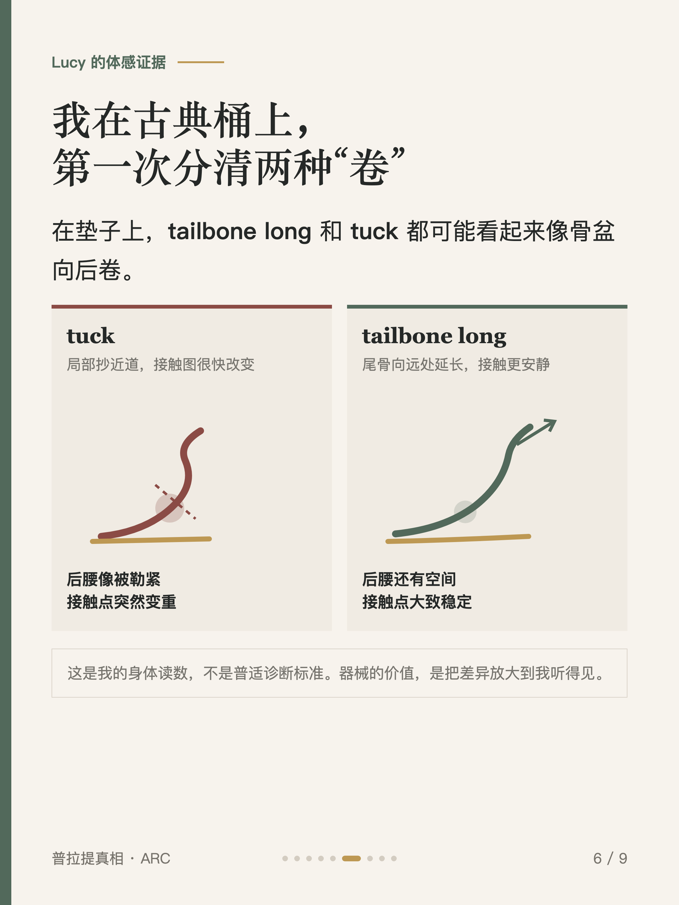
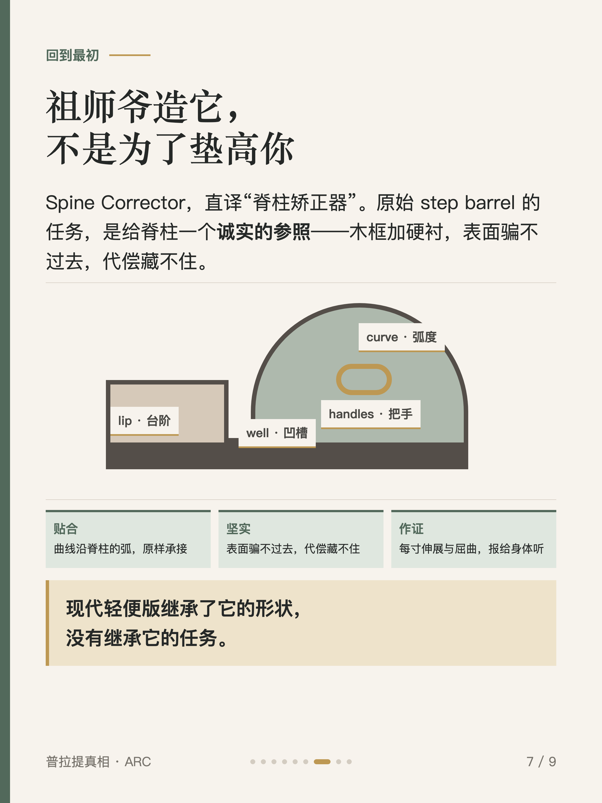
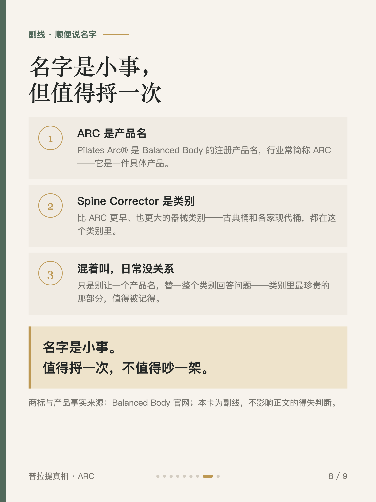
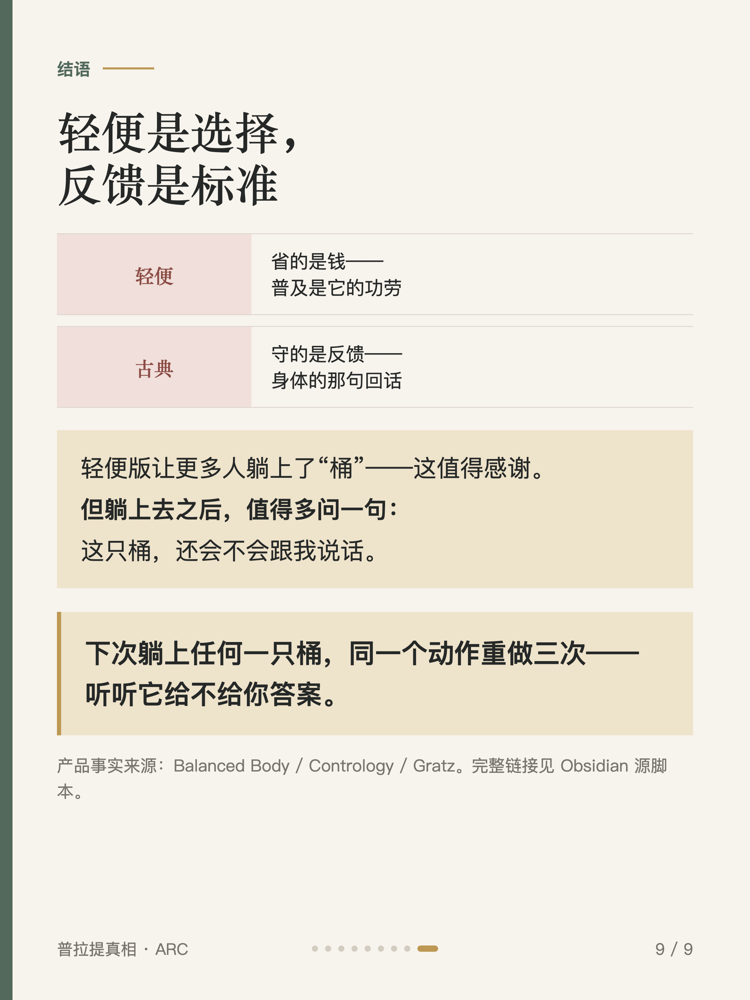

普拉提真相 #003
ARC 和脊柱矫正器差在哪

1 / 9

2 / 9

3 / 9

4 / 9

5 / 9

6 / 9

7 / 9

8 / 9

9 / 9
← 左右滑动浏览全部卡片 →
现代轻便版确实赢了——价格降了、门槛降了、团课用得起了，这些都是真的。但轻便化改造换掉的，正好是古典 Spine Corrector 最初的精髓：更清晰的身体反馈。在轻便版上，身体一发力器械容易先往前跑，圆滑台阶没有明确停止点，同一个动作重做接触位置会漂；换到古典规格，器械安静地留在原地，lip（台阶）与 well（凹槽）给骨盆一个可重复的基准。
基准稳定，你才分得清是自己变了还是器械变了——这也是我第一次在古典桶上分清两种「卷」的地方。名字要捋（ARC、Spine Corrector，行话里都被叫作「桶」），但那只是副线：轻便是一种选择，反馈才是标准。